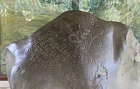
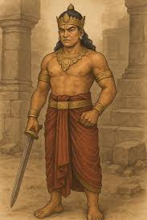
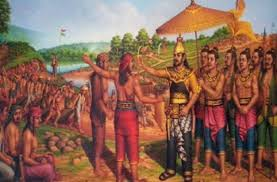

Jejak telapak kaki Raja Purnawarman - menyamakan dirinya dengan Dewa Wisnu, Raja Purnawarman melegitimasi kekuasaannya sebagai penguasa dan pelindung rakyat.
KERAJAAN TARUMANAGARA
Kerajaan Hindu Tertua Kedua di Nusantara (Abad ke-4 – 7 M)

Sejarah Singkat

Kerajaan Tarumanagara adalah kerajaan Hindu tertua kedua di Nusantara setelah Kutai, yang berkuasa di wilayah bagian barat Pulau Jawa, dari abad ke-4 hingga ke-7 Masehi. Kerajaan ini didirikan oleh Maharesi Jayasingawarman sekitar tahun 358 M, namun baru meninggalkan bukti arkeologi yang signifikan pada masa raja ketiganya.
Pusat kekuasaan Tarumanagara diperkirakan berada di wilayah Bekasi, dengan pengaruh kekuasaan meliputi Jawa Barat, mulai dari Banten, Jakarta, Bogor, hingga Cirebon. Sumber utama sejarah kerajaan ini adalah prasasti-prasasti yang ditulis menggunakan aksara Pallawa dan bahasa Sanskerta, yang banyak ditemukan di sepanjang aliran sungai di Jawa Barat.
Pendiri Kerajaan

Pendiri Kerajaan Tarumanagara adalah **Maharesi Jayasingawarman**, seorang pendatang yang berasal dari India. Ia berkuasa dari tahun 358 M hingga 382 M. Jayasingawarman diyakini melarikan diri dari India karena kerajaannya diserang dan kemudian mendirikan Tarumanagara di wilayah Jawa Barat.
Meskipun ia merupakan raja pertama dan pendiri dinasti Warman, jejak arkeologis yang nyata dan signifikan seperti prasasti baru muncul pada masa cucunya, Raja Purnawarman. Setelah wafat, Jayasingawarman digantikan oleh putranya, Dharmayawarman.
Puncak Kejayaan

Kerajaan Tarumanagara mencapai masa kejayaan dan keemasan di bawah pemerintahan **Raja Purnawarman** (Raja ke-3), yang berkuasa dari tahun 395 M hingga 434 M. Pada masa ini, wilayah kekuasaan Tarumanagara meluas secara signifikan, mencakup 48 kerajaan daerah mulai dari Banten, Jakarta, Bogor, hingga Cirebon.
Kejayaan ini juga ditandai dengan kemakmuran rakyat yang didukung oleh proyek pembangunan infrastruktur. Purnawarman sukses memimpin penggalian Sungai Candrabaga dan Sungai Gomati sepanjang 12 km yang berfungsi untuk penanganan banjir sekaligus irigasi pertanian. Hal ini mencerminkan perhatian raja terhadap kesejahteraan rakyatnya.